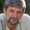

"Lietuviški sąnarių gydymo metodai tik
stebina". Žymus vokiečių reumatologas davė atvirą interviu lietuviškam
leidiniui
Lietuva.one
13.07.2020
Daktaras Karlas Kiršmajeris (Karl
Kirschmayer) - vadovas Berlyno visame
pasaulyje garsios Charite klinikos reumatologijos
centro „Tumorzentrum“ Eva Mayr-Stihl:
Yra tik viena sąnarių ligų priežastis,
bet būtent ją visiškai ignoruoja Lietuvos gydytojai.
Daktaras Karlas Kiršmajeris: "Lietuvoje
sąnarių ligas iki šiol gydo pasenusiais ir mažai efektyviais
preparatais, kuriuos vartoti reikia nuolat visą savo gyvenimą.
Tuo metu likusioje Europoje sąnariai gydomi taip pat lengvai,
kaip ir sloga".
Praeitais metais Karlas Kiršmajeris buvo
atvykęs į Lietuvą, kur tyrė savo lietuviškų kolegų patirtį. Tai, ką
jis pamatė Lietuvoje, anot jo, labai jį nustebino. Kaip tvirtina
Karlas, mūsų šalyje reumatologija sustojo praeito amžiaus vidurio
lygyje.
Po skambių pasirodymų Vokietijoje, daktaras
Karlas Kiršmajeris sutiko duoti interviu lietuviškam leidiniui. Kas
žymiam gydytojui nepatiko Lietuvos medicinoje? Ir kodėl jis
tvirtina, kad PILIEČIAI IŠ LIETUVOS, sergantys sąnarių ligomis
niekada negalės pasveikti?
- Pasirodymo prieš vokiečių žurnalistus
metu, jūs pasakėte, kad jus šokiravo tai, ką jūs pamatėte
Lietuvoje. Ar jūs galėtumėte duoti tuo atžvilgiu komentarą?
- Iškart noriu pasakyti, kad aš palankiai
vertinu Lietuvą, Lietuvos kultūrą ir Lietuvos piliečius. Bet tai,
kokiame lygyje yra jūsų medicina, iš tikrųjų šokiruoja Europos
gydytojus. Jūsų medicina atsilieka mažiausiai 20, o gal ir visus 30
metų. Bent jau gydant sąnarių ligas ir atraminio judėjimo aparato
susirgimus. Galima sakyti, kad Lietuvoje nėra tokio mokslo, kaip
Reumatologija.
Tie preparatai, kuriais gydytojai siūlo gydyti
sąnarius Lietuvoje - NEGYDO SĄNARIŲ ir KREMZLIŲ, jie tik palengvina
ligos simptomus - skausmą, patinimą, uždegimą. Dabar įsivaizduokite,
kas vyksta organizme. Kai žmogus išgeria tabletę, įsitrina
anestetinį tepalą ar leidžia vaistus, skausmas atslūgsta. Bet, kaip
tik priemonė nustoja veikti - skausmas iškart sugrįžta.
O skausmas - tai svarbus signalas, nusakantis,
jog sąnaryje vyksta patologinis procesas. Tiesiog slopinant skausmą,
ligos paveikti sąnariai ardomi dar labiau. Ardymosi procesas
pagreitėja 3-5 kartus ir, galiausiai, priveda prie negrįžtamųjų
pokyčių, prie pilno judėjimo praradimo bei invalidumo.
Toks kovos su sąnarių skausmu būdas Europoje
jau nebetaikomas daugiau 20 metų. Nuskausminamieji naudojami tik
kraštutiniais atvejais, labai tiksliai ir atsargiai. Vokietijoje jie
parduodami tik pagal receptus ir tai griežtai kontroliuojama.
Taip vadinamieji "chondroprotektoriai"
uždrausti pilnai, kaip sukčiavimo bei absoliučiai beprasmiai
preparatai.
Jūsų gydytojai ir farmacininkai tiesiog žaloja
žmones! Suprantama, kad pastoviai brangiai pardavinėti simptomus
šalinančias priemones daug naudingiau, negu kartą ir visiems laikams
išgydyti ligą, atstatyti yrantį sąnarį, bet juk taip negalima!
- O kaip reikalai su sąnarių gydymu
Vokietijoje?
- Visi Vokietijos gydytojai, pradedant
profesoriais-reumatologais ir baigiant eiliniais terapeutais bei
greitosios pagalbos gydytojais, jau seniai suprato, kad reikia
šalinti ne susirgimo pasekmes, o jo priežastis. Tai lemia greitą,
pilną ir saugų pasveikimą. O kokia pagrindinė sąnarių pažeidimo
priežastis? Tai orto-druskų susikaupimas dėl kraujotakos ir
sinovialinio skysčio cirkuliavimo sutrikimo.
Uratai - tai tikrosios šlapimo rūgšties
druskos, podagros vystymosi priežastis.
Osteofitai - kaulinės druskų ataugos, esančios
kitų 97% sąnarių ir stuburo ligų priežastis. Visos artrito bei
artrozės rūšys, osteochondrozė, reumatizmas, bursitas ir net
gigroma. Visi šie susirgimai atsiranda dėl vienos priežasties -
osteofitų susikaupimo.
Druskos, besikaupiančios ant sąnario
paviršiaus, lyg švitrinis popierius nušlifuoja aplinkinius audinius
- kaulus ir kremzles. Augant, orto-druskų kristalai traumuoja
raumenų audinius, sausgysles, kraujagysles bei kapiliarus. Todėl
atsiranda uždegimai, užsikrėtimai, patinimai ir sunkūs skausmai.
Užleistais atvejais dėl didelių orto-druskų
susikaupimų dėl staigaus judesio gali lengvai nuskilti kaulo dalis,
ko pasekmė gali būti pilnas neveiksnumas ir visam laikui nejudantis
sąnarys.
Labai pavojinga klaidinga nuomonė, jog kalcis
sveikas sąnariams. Tai, kalcis sveikas, bet jis sveikas tik
SVEIKIEMS sąnariams. Kai sąnariai jau skauda ar traška,
reiškia juose jau susikaupė osteofitų sluoksnis, o kalcis, be
kaulinio audinio stiprinimo, taip pat stiprina ir druskas -
osteofitus, taip pagreitindamas ir pasunkindamas jų augimą.
Todėl vokiečių reumatologai pirmiausiai
atstato kraujotaką pažeistame sąnaryje, kad būtų pašalintos
orto-druskos, sukauptos per metus. Tai, savo ruožtu, atstato
normalią sinovialinio skysčio cirkuliaciją ir paleidžia sąnario
audinių atstatymo procesą.
Orto-druskų "ataugos" ant sąnario
paviršių - pirmoji visų patologijų priežastis
Iš tikrųjų žmogaus sąnariai labai gerai
regeneruojasi jie moka atsistatyti savaime, lyg driežo uodega.
Reikia tik truputį jiems padėti - atlaisvinti nuo "prilipusių" ant
jų orto-druskų ir procesas vyks savaime.
Dar 90-ais praeito amžiaus metais Šveicarijos
mokslininkams pavyko išgauti ypatingą kvazi-vitamino B formą, taip
vadinamą arnika montana ekstraktas. Jis išgaunamas sintezuojant natūralius
ingredientus: eterinius aliejus (mentolis, limonenas), levandų
ekstraktą plius rinkinys iš dar daugiau 50-ies skirtingų ekstraktų.
Ši medžiaga gali prasiskverbti į orto-druskų
molekulių vidų ir sprogdinti jas iš vidaus - rezultate nuvalomi
sąnarių paviršiai, atstatoma kraujotaka ir sinovialinio skysčio
cirkuliacija. VISAM LAIKUI! O tiksliau, iki to momento, kol druskos
vėl susikaups (bet tam prireiks kelių dešimčių metų). Daugiau
NEREIKIA PASTOVIAI naudoti nuskausminamųjų ir priešuždegiminių
preparatų. Nereikia bijoti, kad kartą sąnarys "užsikirs" visam
laikui, bus pilnai prarasta judėjimo galimybė ir teks jį protezuoti.
Žmonės pilnai pasveiksta dešimtims metų.
Kai aš pamačiau Lietuvos statistiką, man
pasišiaušė plaukai. Ar žinote, kokia dažniausia invalidumo
priežastis Lietuvoje? Tai ne vėžys ne AIDS ne diabetas o artrozė!
Paprasčiausia artrozė kuri Vokietijoje pagydoma per 4 savaites ne
pačiu brangiausiu preparatu Lietuvoje yra invalidumo priežastis!
Šiandien Vokietijoje sąnarių ligos nelaikomos
pavojingomis patologijomis, jeigu, aišku, nekalbama apie rimtas
traumas: lūžius, skilimus, plyšimus ir t. t. Sąnarių skausmas ir
uždegimai byloja vien apie tai, kad jie "užteršti" druskomis ir juos
jau laikas būtų pavalyti. Po 4 savaičių trunkančio "valymo" kurso,
sąnariai atsistato ir apie problemą galima pamiršti arčiausiems
dešimčiai metų.
Sąnarių ligos, kurias Lietuvoje bando "gydyti"
atskirai, Europoje jau sujungti į vieną ligą "Articulatio de sales"
(Druskų ataugos ant sąnarių). Šiai ligai priskiriami:
Podagra
Artritas
Artrozė
Osteochondrozė
Reumatizmas
Osteoporozė
Bursitas
Sinovitas
Gigroma
Tai labai trumpas sąrašas, bet kitos ligos yra
tik šių devynių patologijų atmainos. Pavyzdžiui, koksartrozė tai
artrozės atmaina ir t. t.
Ir visas šis ilgas susirgimų sąrašas gydomas
labai lengvai, banaliai nuvalant sąnarius. Absoliučiai saugus
metodas, nereikalaujantis gydytojų pagalbos ir atliekamas namų
sąlygomis.
- Kaip "valo" sąnarius Vokietijoje?
- Šiai dienai yra specialūs preparatai, skirti
sąnarių valymui nuo susikaupusių druskų. Jų sudėtyje yra
arnika montana ekstraktas. Pavyzdžiui, labai geras preparatas yra .
Jo sudėtyje yra arnika montana ekstraktas ypatingos, lengvai įsisavinamos
formos, todėl jis labiau efektyvus.
Taip pat svarus būtent pliusas yra
tai, kad jo sudėtyje yra sisteminių artro - vitaminų, makro- ir
mikroelementų, skirtų sąnario audinių darbui pagerinti, kompleksas.
Tai yra, jis turi visapusišką sveikatos atžvilgiu palankų poveikį
kauliniam ir kremzliniam audiniams, sinovialiniam skysčiui, raumenų
plaušams, sausgyslių ir raiščių audiniams. Visas galimas
kompleksinio poveikio spektras.
sudėtyje yra daugiau 20 komponentų.
Aš jų visų nevardinsiu, išvardinsiu tik pagrindinius:
ARNIKA MONTANA EKSTRAKTAS
turi priešuždegiminių ir analgetinių savybių. Jis taip pat turi antiseptinį ir vazoprotekcinį poveikį.
MENTOLAS
turi silpną antiseptinį poveikį, vėsina odą, taip pat turi vietinį anestezinį poveikį.
EUKALYPTUS ETERINIS ALIEJUS
turi antiseptinių ir priešuždegiminių savybių, nes jame yra cineolio. Jis taip pat stabdo bakterijų augimą ir turi vėsinantį poveikį odai ir gleivinėms.
KOFEINO ALIEJUS
naudojamas esant įvairių etiologijų sąnarių skausmams, įskaitant reumatoidinį artritą, raumenų uždegimą, sausgyslių uždegimą ir nervų skausmą.
- Kiek mums yra žinoma,
neparduodamas Lietuvos vaistinėse?
- Tame ir reikalas, kad ne. Lietuvos gydytojai
geriau tonomis "šers" gyventojus anestetikais ir
chondroprotektoriais, negu užsiims tikru gydymu.
Bet net neabejoju, Lietuvos reumatologai, bent
jau tie, kas domisi progresyviais gydymo metodais, žino apie
ir jo atstatomąsias savybes. Bet nerizikuoja skirti
preparato, kurio nėra Sveikatos apsaugos ministerijos sąrašuose.
Kiek man yra žinoma, gamintojas
norėjo ateiti į Lietuvos rinką. Bet jam to padaryti neleido,
sugalvojus tūkstančius kliūčių (biurokratijos Lietuvoje atsikratyti
neįmanoma). Tas ir suprantama - jei šis preparatas atsiras
vaistinėse, tai farmacinė Lietuvos mafija patirs milžiniškus
nuostolius. Juk šiandien farmacija yra verslas! Net Europoje. Bet
Europoje verslas kontroliuojamas valstybės, o kas vyksta Lietuvoje,
aš nesiimu teigti, jums, turbūt, geriau matyt.
- Ką jus patartumėte gyvenantiems Lietuvoje
žmonėms su sąnarių ligomis?
- Paprasti žmonės, ypač žmonės, kuriems yra
virš 50 metų, labiausiai kenčia nuo lietuviškos medicinos
atsilikimo. Tai ne jų kaltė, tiesiog taip sukurta sveikatos apsaugos
sistema.
Bet, laimei, išeitis yra. Mes susitarėme su
Lietuvos NMTI Reumatologijos sferoje apie galimybę išdalinti
preparatą su nuolaida visiems Lietuvos piliečiams, kuriuos vargina
sąnarių ligos. NMTI darbuotojai sukūrė specialų paskirstymo centrą,
o mes suteiksime reikalingą preparato partiją. Todėl dabar bet kuris
Lietuvos gyventojas gali išsirašyti su nuolaida su
pristatymu visoje Europoje.
Dabar papasakosiu, ką reikia padaryti, kad
gautumėte :
Reikia:
Užpildyti užsakymą
su nuolaida iki 15.07.2020 įskaitant, forma pateikta žemiau;
Sulaukti gydytojo-konsultanto skambučio, jis atsakys į visus
iškilusius klausimus. Jam reikės pasakyti pristatymo adresą;
Po 5-7 dienų reikės ateiti į paštą ir gauti siuntinį.
mes parduodame jau 2 mėnesius. Šia
galimybe jau pasinaudojo keli tūkstančiai Lietuvos piliečių. Visus,
gavusius , mes prašome įvertinti - kaip gerai jiems padėjo
preparatas pagal skalę nuo 1 iki 10. Šiai dienai apklausoje dalyvavo
virš 3000 žmonių ir vidutinis įvertinimas yra 9,97 iš 10.
Kaip matote, padėjo atgauti judėjimo
laisvę ir atsikratyti skausmo jau tūkstančiams Lietuvos piliečių ir
Jūs galite spėti atsirasti jų tarpe.
- Kaip ilgi bus dalinamas preparatas su
nuolaida?
- Kaip jau sakiau, numatoma programos pabaigos
data 15.07.2020. Bet iš karto noriu perspėti, kad pakuočių liko visai
nedaug. Užsakymai auga lyg sniego gniūžtė. Veikia informacijos
perdavimas "iš lūpų į lūpas", žmonės viens kitam perduoda
informaciją, pataria draugams, užsako giminaičiams. Mes net
negalvojome, kad informacija apie taip greitai bus
paskleista.
Kol preparatas nepasibaigė, rekomenduoju
visiems žmonėms, kurių amžius siekia 45 ir daugiau metų, palikti
užklausą jam gauti su nuolaida svetainėje.
Regiono patikra: Jūsų
regionas patenka į specialią
programą
Komentarai:
Lina
Kruplevičiūtė
Dėkui. Labai naudinga!
Užsisakiau kol kas su nuolaida! Konsultantas pasakė,
kad dar turi, bet greitai eina į pabaigą. Sėkmingai išgirdau šią
naujieną.
Viktoras
Macevičius
Aš vienas tų, kas jau spėjo
išbandyti šią priemonę. Ji iš tikrųjų geriausia iš visų mano
matytų. Ir aš ligonis su stažu - jau 7 metus mane vargina
artrozė. Jau aš buvau pasiruošęs visą gyvenimą gerti tabletes ir
daryti injekcijas, bet po kurso skausmas atslūgo.
Visai dingo. Rekomenduoju jį visiems - jis padės!
Mykolas Stumbras
Man 63 metai. Keliai skauda
nuo 53 metų. Paskutiniu metu skausmas tapo visai nepakeliamas.
Pažįstamas gydytojas (vaikystės draugas) prieš 3 mėnesius
papasakojo apie šią programą ir patarė išsirašyti priemonę.
Dabar šokinėju, kaip kalnų... Nors ne, taip nereikia) Tiesiog
šokinėju! Neapsakomas preparatas!
Elena Dirbienė
Palikau užklausą per
akciją. Pažadėjo, kad už 5 dienų galėsiu gauti pašte. Labai
viliuosi.
Greta Bukevičienė
Pagrindinis gydytojų
tikslas, mano manymu, nuplėšti nuo mūsų kuo daugiu pinigų,
daugiau jų niekas nedomina. Kas pusmetį man tekdavo leistis
injekcijas. Šių metų rudenį man buvo paskirta tiek vaistų, kad
net bijojau tų injekcijų. Juk gydytoja net nežvilgtelėjo, kokių
aš dar turiu ligų ir kaip tai gali paveikti mano organizmą.
Pilnas abejingumas ir paskyrimas tų preparatų, už kuriuos
gydytojai gauna pinigus iš įmonių. Gal kitose vietose kitaip,
bet nesu tikra. Tokia pas mus medicina. O preparatas su nuolaida
- gera naujiena!
Andrius Karosas
Taip, mūsų šalyje galima
tik mirti. Man 68 metai. Jau du mano vienmečių trečdaliai mirę,
kiti vos juda dėl amžinai kenčiamų skausmų
kojose-rankose-nugarose... Reikia susimąstyti
Kęstas Brudas
Preparato poveikis tikrai
nenusakomas. Perėjau kursą dar praeitą vasarą (sūnus atvežė iš
Europos). Podagra dingo! Iki šiol nėra jokių simptomų. Pats
stebiuosi. Jaučiuosi tvirtam 10. Rekomenduoju išbandyti
kiekvienam. Ypatingai dabar, su nuolaida!
Alina
Irgi ne iš nuogirdų žinome
ir jis man taip pat labai padėjo. Pastoviai tekdavo
leistis vaistus, o po jau antrą mėnesį aš skraidau!
Laimutė
Bivainienė
Man taip pat patiko
preparatas. Pradžioje aš vartojau kitus vaistus. Bet, laikui
bėgant, jie nustojo veikti. Tuomet kreipiausi į gydytoją, jis
man pasiūlė išbandyti (gydytojas buvo jaunas, turbūt,
dar tiki, kad medicina turi tarnauti žmogui, o ne būti pinigų
rinkimo priemone!). man padėjo beveik nuo pirmo
naudojimosi - skausmas beveik iš arto atslūgo, pradėjau vartoti
kursą, kaip ir patarė gydytojas. Po 4 savaičių aš jau pamiršau,
kad man iš viso kažkas skaudėjo. Jaučiuosi kaip jaunystėje!
Antanas Šmėkla
Sodo kaimynas, jam 72
metai, anksčiau dažnai skundėsi juosmens skausmu. Bet paskutinį
mėnesį matau jį žvalų ir aktyvų. Papasakojo, kad naudojosi
, anūkas jam iš kažkur atvežė.
Jolanda Lietienė
Kol skaičiau vokiečių
forumuose vokiečių atsiliepimus apie , žiūriu, jis jau
eina į pabaigą! Ačiū Dievui, spėjau užsisakyti
oficialioje interneto svetainėje. Dar ir su nuolaida
spėjau gauti, irgi malonu
Povilas Kaštonas
Viename iš forumų, kur
susirenka kenčiantys nuo sąnarių skausmų, sužinojau apie
. Ten daugelis giriasi savo rezultatais. Nusprendžiau
taip pat užsisakyti. Tepuosi tik savaitę, o jau yra pastebimų
rezultatų. Skausmas pilnai dingo, traškesys tapo pastebimai
tylesnis, dar yra nežymus patinimas, bet jau daug geriau, negu
buvo. Pagal kurso rezultatus rašysiu, bet pradžia džiugina.
Marija Korienė
Dėkui. Išsirašiau sau ir
vyrui. Paklausiau konsultanto, kada atsiras vaistinėse - jis
pasakė, kad nežinoma. Todėl, galimai, tai vienintelė galimybė
šiam preparatui gauti


Komentarai: